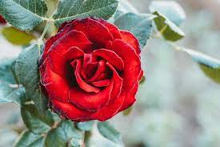
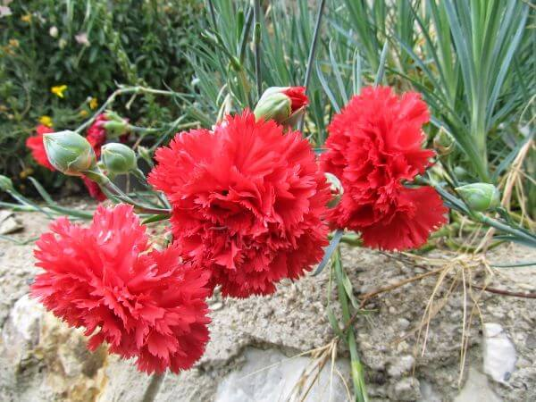
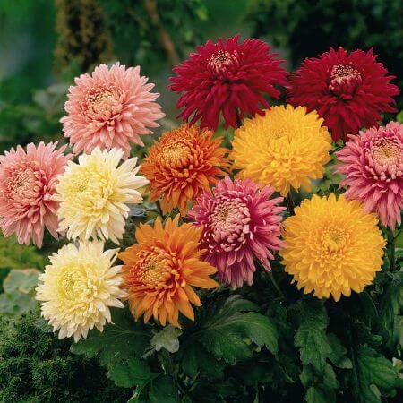
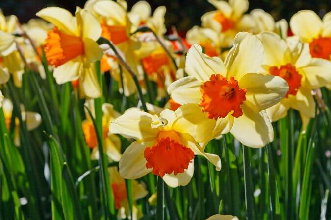

Gul
Kırmızı gül: Aşkı ve tutkuyu ifade eder. Çiçekçilikte en çok tercih edilen renktir.
25 ₺

Karanfil
Pembe, kırmızı, beyaz ve mor gibi renkleri olan karanfil güzel kokusuyla bilinir.
25 ₺

Kasimpati
Kimi zaman cenaze çiçeği (Uzakdoğu’da, Japonya’da cenazelere götürüldüğü için), kimi zaman ölümsüz aşkın, kimi zaman da platonik sevdaların kahramanı olur.
25 ₺

Nergis
Beyaz ve sarı renklerinin hakim olduğu nergis çiçeği, soğuklara karşı direnç gösterebilen bir bitkidir.
25 ₺

Zambak
Genellikle bahçede, ancak saksıda da yetiştirilir. Bazı türleri güzel kokuludur.
25 ₺
Papatya
Sade bir görünüme sahip olan papatyalar doğada, evde saksıda veya bahçede kolaylıkla yetiştirilebilir.
25 ₺